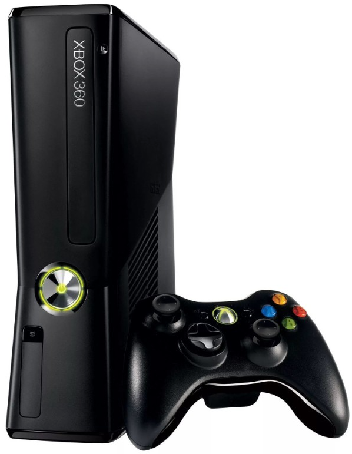
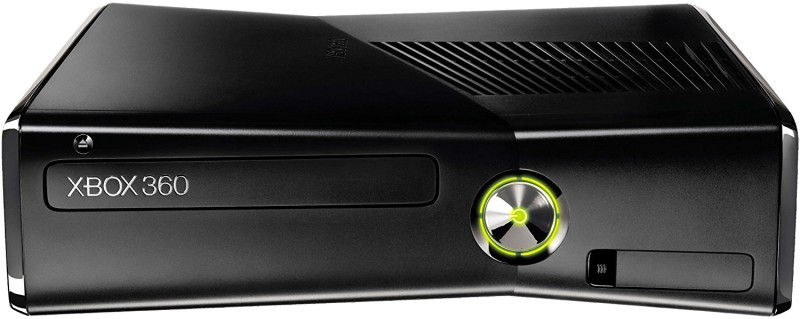
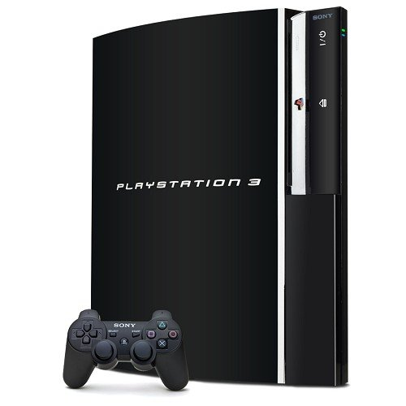
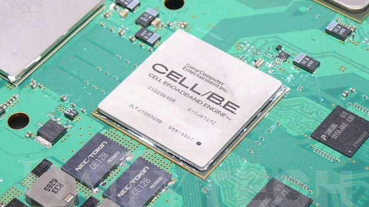
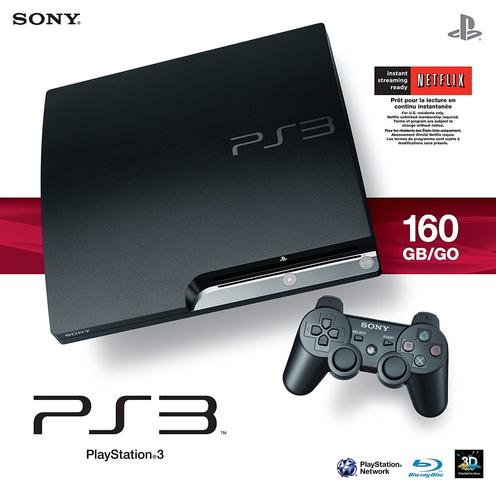
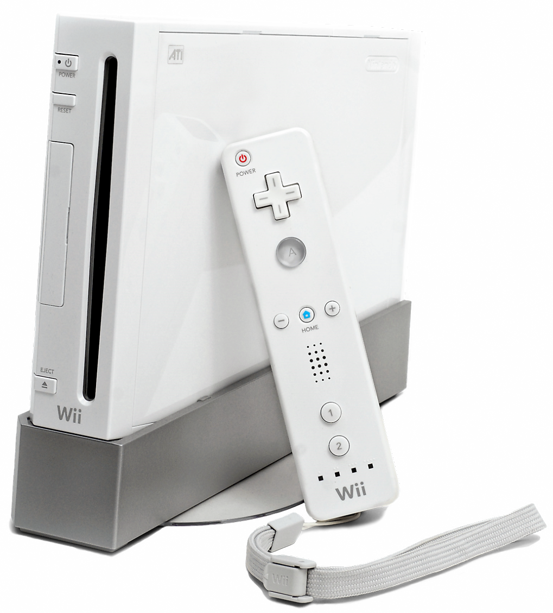
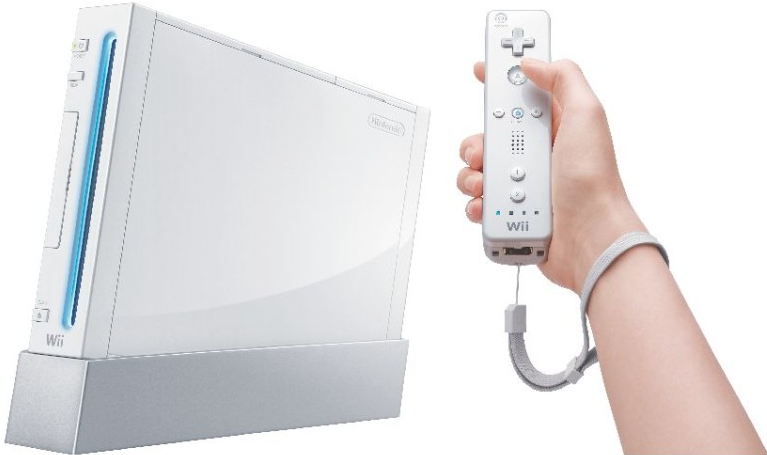
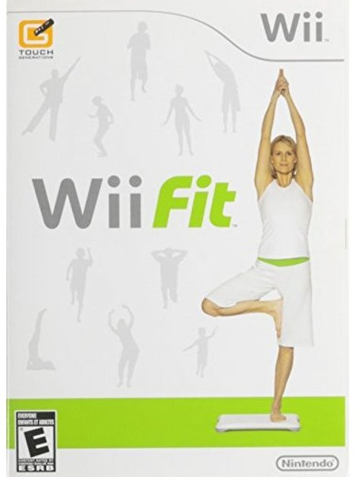

Evolution of Console








XBOX 360
_ 2005
XBOX의 후속기기, 2006년 출시를 목표로 했지만 PS3 발매시기에 맞추어
발매
레드링 증상이 발생했고, 증상이 발생한 기기들을 무상 A/S 기간을
늘려주며 뒷수습을 했지만 거의 해결되었을 땐 이미 1위를 놓친 상태였다.
플레이스테이션 3
_ 2006
PS, PS2로 승승장구하던 소니의 질주에 제동을 걸게된 기기, 발매 게임엔
밀릴 이유가 없지만 발매일을 늦춘 점과 PS2가 아직 현역으로 멀쩡히 뛰는
점, 하위 호환을 지원하지 않는 점 등의 문제로 1위를 반환하게 되었다.
엑스벡스만의 독점 게임들과 엑스박스 360 게임들의 하위 호환을
지원해주는 등의 장점이 있었지만 PS4에 못미치는 판매량을 기록했다.
닌텐도_ Wii
_ 2006
닌텐도에서 출시한 7세대 게임기, 성능은 게임큐브와 크게 다르지 않았지만
다른 7세대 게임기들과 Wii의 큰 차이점은 컨트롤러였다.
이전 게임기들에서 시도하며 쌓아온 다양한 형태의 컨드롤러들을 Wii
주변기기로 재출격시키며 직접 몸을 움직여 하게 만드는 차별화된 재미를
느끼게 해주어 닌텐도를 다시 탑으로 끌어 올려주게 되었다.